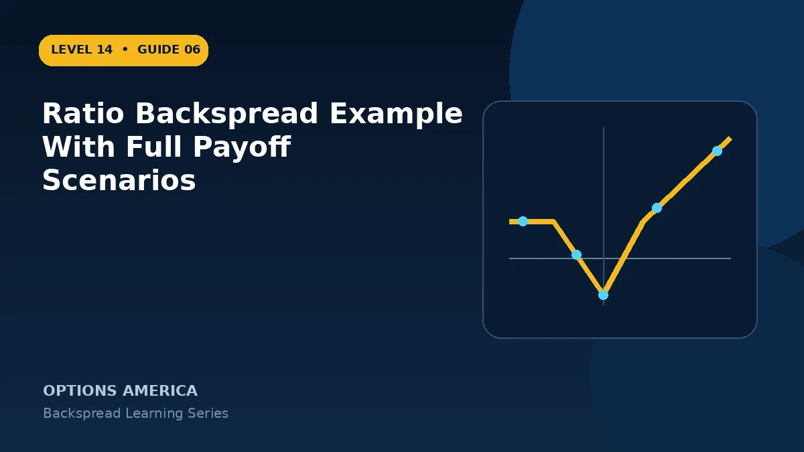

Walk through a 1-by-2 call backspread at expiration across prices below, between and far above its strikes.
Set up the trade
Stock is $100. Sell one 100 call for $6.20 and buy two 105 calls for $3 each. The position opens for a $0.20 credit, or $20 per standard ratio.
At or below $100
All calls expire worthless and the $20 credit is retained. This small outcome does not compensate for a move that stops in the middle loss region.
Between $100 and $105
Only the short call has intrinsic value. At $103 it loses $300, so net expiration loss is $280 after the original credit.
At and above $105
Maximum loss is $480 at $105. At $110 the short call loses $1,000 while the two long calls gain $1,000, leaving the $20 credit. Above $110, net profit grows dollar for dollar with stock.
A practical example
Approximate P&L at $98, $103, $105, $110 and $115 is +$20, −$280, −$480, +$20 and +$520 before costs.
This simplified example focuses on selected expiration outcomes; live prices and risks will differ. Live option prices also reflect the underlying price, time decay, rates, dividends, liquidity and transaction costs. Greeks are theoretical estimates, not guarantees.
Turn the payoff into a trading plan
Before entering ratio backspread example with full payoff scenarios, write down the stock price, both strikes, expiration, contract ratio and total opening credit or debit. Then calculate the quiet-side result, maximum loss at the long-option strike and the far-move breakeven. These three checkpoints make the position easier to monitor and help prevent the attractive tail payoff from hiding the loss valley.
Test at least five scenarios: no move, a move to the short strike, a move to the long strike, a move to breakeven and a move well beyond breakeven. Repeat the exercise with implied volatility higher and lower and with less time remaining. The resulting range is more useful than a single payoff line because a live backspread can change substantially before expiration.
Finally, define the catalyst, maximum acceptable loss, review date and closing method in advance. Use one multi-leg order whenever possible, confirm every fill and recalculate the remaining position before changing any leg. Assignment, liquidity and transaction costs belong in the plan even when the expiration loss appears defined.
Frequently asked questions
Why is $105 worst?
The short call is fully five points ITM while both long calls have zero intrinsic value.
When does upside accelerate?
Once price moves beyond the long strike.
Can it be closed early?
Yes, as a complete ratio order.
Continue the Backspread Strategies cluster
Explore related guides: How to Choose a Backspread Option Ratio · Ratio Backspread vs Long Straddle · Backspread Options Strategy: 12 Mistakes to Avoid. For a structured sequence, use the free Level 14 – Backspread course.
Options involve risk and are not suitable for every investor. This material is educational and is not investment, tax or legal advice. Greeks are theoretical estimates, and contract terms and broker requirements can vary.